📑 Dans cette page (5 sections)
Studio → Nouveau document. Titre, département, tags, résumé, couverture, contenu, puis cases Publier / Épingler.
✒️ Markdown pris en charge
| Syntaxe | Résultat |
|---|---|
## Titre / ### Sous-titre |
Titres (alimentent le sommaire automatique) |
**gras**, *italique* |
Gras, italique (le barré ~~ n'existe pas : utilise <del>texte</del>) |
> citation |
Bloc citation rouge |
- élément / 1. élément |
Listes |
`code` et blocs |
Code |
[texte](https://…) |
Lien (s'ouvre dans un nouvel onglet) |
Tableaux \| a \| b \| |
Tableaux |
\|\|texte\|\| |
Texte expurgé : barre noire, révélée au survol ou au clic |
Le HTML saisi à la main est assaini : seules les balises de mise en forme courantes sont conservées (scripts, styles, iframes arbitraires supprimés).
🎞️ Insérer des médias
%%{init: {"theme":"base","themeVariables":{"primaryColor":"#0f2130","primaryTextColor":"#e6eef5","primaryBorderColor":"#5fd0ff","lineColor":"#3d89ab","secondaryColor":"#1a0d14","tertiaryColor":"#0b1824","edgeLabelBackground":"#0f2130","fontFamily":"ui-monospace, Menlo, Consolas, monospace","noteBkgColor":"#1a0d14","noteTextColor":"#ffb4bb","actorBkg":"#0f2130","actorBorder":"#5fd0ff","actorTextColor":"#e6eef5","signalColor":"#3d89ab","signalTextColor":"#3d89ab","labelBoxBkgColor":"#0f2130","labelTextColor":"#e6eef5","loopTextColor":"#3d89ab"}}}%%
flowchart LR
A["📝 Markdown + shortcodes"] --> B["🧩 Extraction des shortcodes"]
B --> C["█ Texte expurgé en span"]
C --> D["📄 Markdown vers HTML"]
D --> E["🧼 bleach : assainissement"]
E --> F["🖼️ Réinsertion des médias"]
F --> G(["🌐 Page publiée"])
class G ok
classDef cloud fill:#0f2130,stroke:#5fd0ff,color:#e6eef5
classDef ok fill:#0c241b,stroke:#5dffb0,color:#e6eef5
classDef bad fill:#241219,stroke:#ff4d5e,color:#ffb4bb
Aperçu des dispositions :
align=left align=right align=center / full
┌──────┬───────────┐ ┌───────────┬──────┐ ┌──────────────────┐
│ IMG │ texte qui │ │ texte qui │ IMG │ │ texte │
│ │ habille │ │ habille │ │ ├──────────────────┤
├──────┘ le média │ │ le média └──────┤ │ IMG │
│ suite du texte │ │ suite du texte │ ├──────────────────┤
└──────────────────┘ └──────────────────┘ │ texte │
└──────────────────┘
Un shortcode se place seul sur sa ligne, n'importe où : avant, après ou entre des paragraphes.
[[media: URL | align=left | width=40 | caption=Légende]]
| Option | Valeurs | Effet |
|---|---|---|
align |
full (défaut), center, left, right |
left/right : le texte suivant habille le média ; center/full : seul sur sa ligne |
width |
10 à 100 | Largeur en % de la colonne |
caption |
texte | Légende (sans \| ni ]) |
loop |
drapeau (vidéo) | Lecture automatique, muette, en boucle (façon GIF) |
Autres blocs
[[media: https://exemple.com/video.mp4 | loop]]
[[gallery: URL1 | URL2 | URL3]]
[[youtube: https://youtu.be/dQw4w9WgXcQ]]
gallery: grille responsive d'images/vidéos.youtube: accepte un lien (youtu.be,watch?v=,embed/) ou l'identifiant de 11 caractères ; lecture viayoutube-nocookie.com.- Les adresses acceptées : fichiers de la bibliothèque (
/media/…ou adresse du bucket) ou n'importe quelle adresse https. Les autres (http,javascript:…) sont ignorées. - Une vidéo est reconnue à l'extension
.mp4,.webm,.mov; le reste est traité comme image.
Exemple
## Observation
[[media: /media/a1b2c3.jpg | align=right | width=40 | caption=Sujet à 14h02]]
Le sujet est resté immobile pendant toute la durée de l'observation. Le texte
continue autour de l'image placée à droite.
[[gallery: /media/x.jpg | /media/y.jpg | /media/z.jpg]]
Les données ont été ||expurgées|| par ordre du directeur.
🖥️ Dans l'éditeur
- Bibliothèque à droite : glisse-dépose, clic pour parcourir, ou colle une image (Ctrl+V) dans le texte.
- Choisis disposition, largeur, légende, puis Insérer : le shortcode est ajouté à la position du curseur.
- Couverture : définit l'image affichée en tête d'article et sur les cartes.
- Sélection de plusieurs médias puis Insérer en galerie.
- Aperçu en direct (bouton 👁), compteur de mots, brouillon local sauvegardé dans ton navigateur (bouton de restauration si la page est rechargée).
🏷️ Résumé, tags, couverture
- Résumé : 300 caractères max ; généré automatiquement à partir du texte si laissé vide.
- Tags : séparés par des virgules ; transformés en
minuscules-sans-accents(8 max). Chaque tag a sa page/tag/<tag>. - Couverture : image (ou adresse https) ; sans couverture, une icône de département s'affiche.
⚠️ Limites connues
ℹ️ Note
Les légendes sont du texte brut. L'adresse d'un article est créée à partir du titre au moment de la création.
- Un shortcode écrit dans un bloc de code est quand même interprété. Pour l'afficher tel quel, écris-le avec un espace :
[ [media: …] ]. - Les légendes sont du texte brut.
- Le titre d'article génère l'adresse (
/a/<slug>) à la création ; modifier le titre ensuite ne change pas l'adresse.


◀ 🎞️ Médias et stockage · 🛠️ Administration ▶

⛨ SCP Foundation — projet de fan non officiel · contenus SCP sous licence CC BY-SA 3.0 lorsque applicable · ⬆ retour en haut